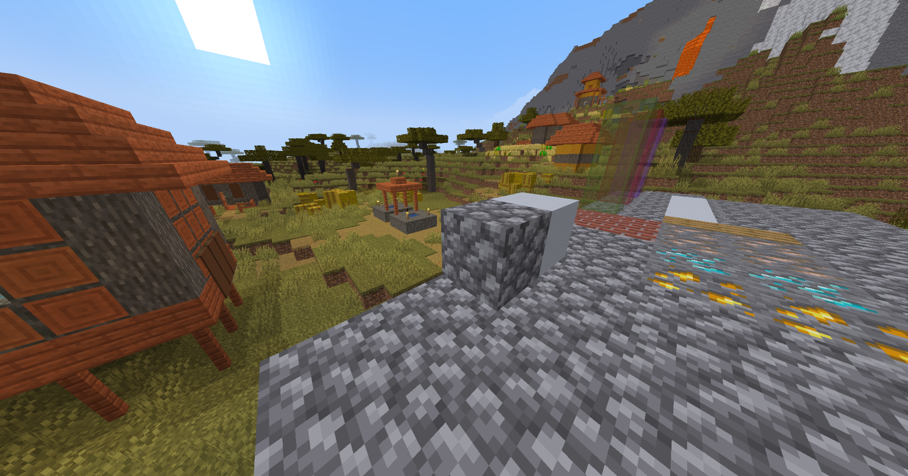
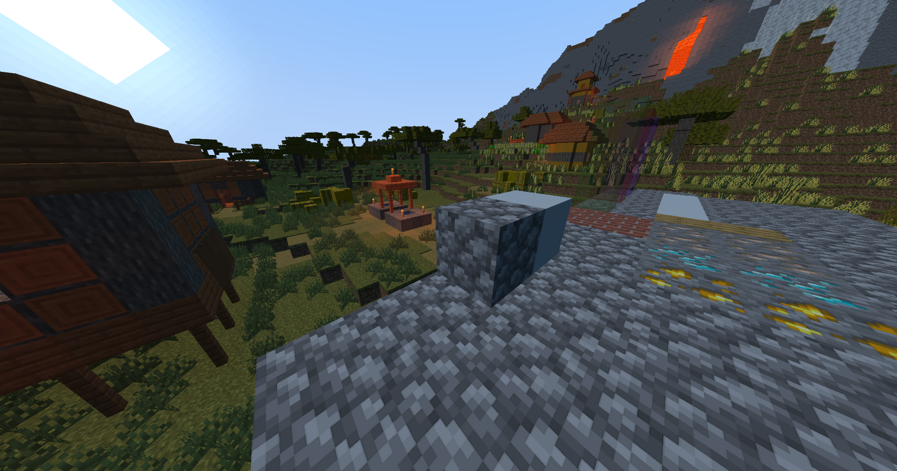
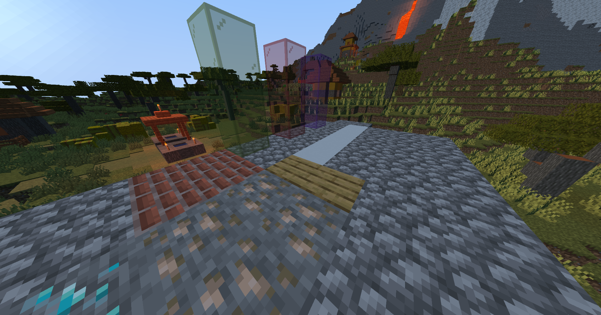
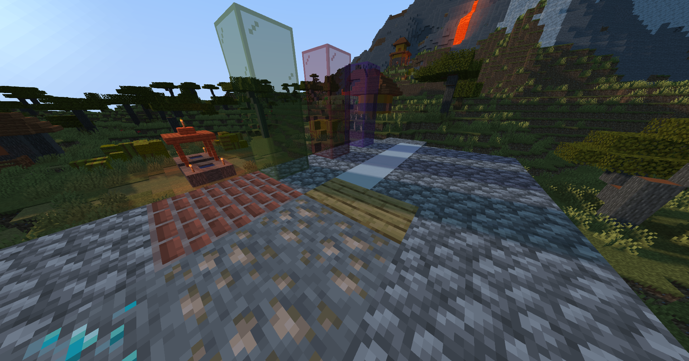
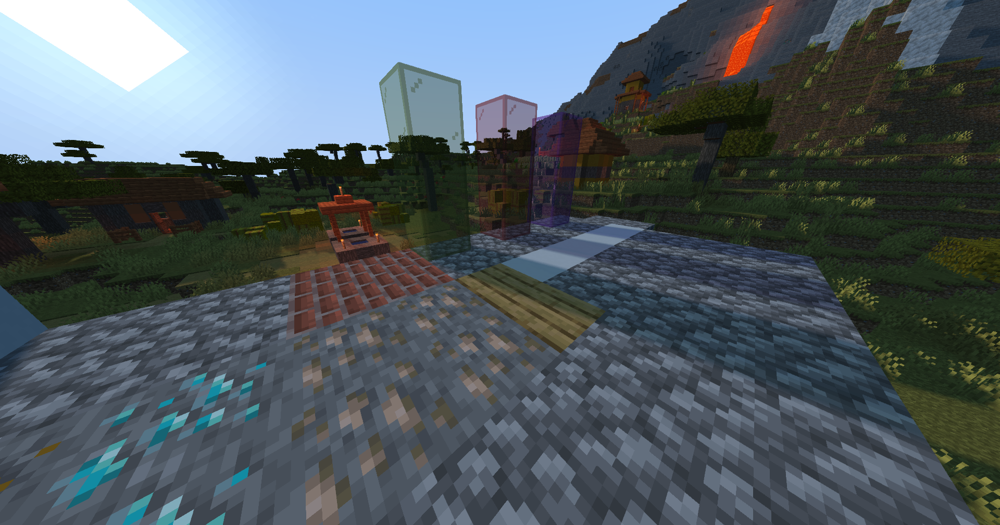

Currently, Minecraft uses a simple lighting and texture model. Each surface (block) calculates its light level based on direct vertical exposure to the sky along with light sources such as torches. We aimed to change the sun into a directional light source and add support for height and normal data in textures.
Summary SlidesImplemented directional sunlight in the form of normal shading. Also rewrote builtin minecraft lightlevel handling to use lightsource colors and attenuate more realisticly.
| Vanilla | With Shader |
|---|---|
|  |  |
The blocks are lit differently based on the angle of the sun giving much more realistic direct lighting.
Implemented shadows using the shadowmap in optifine along with improvements to make shadows smoother and pass on colors of transparent blocks.
| Without normal map | With normal map |
|---|---|
|  |  |
The terrain in the background looks significantly nicer with the shadows. The glass also showcases the colored shadows on the ground.
Read in normal and ambient occlusion data from a texture in the labpbr format to make blocks appear to have more depth than their geometry.
| Without normal map | With normal map |
|---|---|
|  |
We changed our plan quite a bit due to lacking scope in our original proposal. We have completed everything on our new internal plan for the milestone except specular highlights.
Our plan moving forward is to complete the specular highlights, parllax mapped rendering, then parallax occlusion mapped rendering.